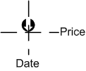

public method instance_impl:createTextOutputThe method adds an text output stream to the indicator.
| Declaration | ||
|
| Parameters | |||||||
label |
The short name of the stream. |
||||||
id |
The stream identifier. The identifier must contain only English letters or digits and must be unique within the instance of the indicator. |
||||||
font |
The name of the font which is used to draw the text labels. |
||||||
size |
The size of the font. The size is expressed in points (a point is 1/72 of inch). |
||||||
halign |
The horizontal alignment of the text labels. The possible values are:
|
||||||
valign |
The vertical alignment of the text labels.
Can be
This is an example how the label must be located in  |
||||||
color |
The color of the text label. |
||||||
extent |
Optional. The parameter specifies the difference between the source size and the
output size. The positive number means that the output is longer than the source, the negative number means that
the output is shorter than the source. The default value is |
||||||
Returns
The method returns an instance of the text_output_impl table.
By using the text output stream you can put text labels at the specified period/price level instead of lines or bar as for regular output streams.
The text output stream lets the indicator to place text labels at the specified levels for the specified periods.
You can also use the windows symbol fonts such as "Wingdings", "Wingdings 2"
or "Wingdings 3". To put the character by its code you can use the "\xxx" notation where
xxx is decimal code of the character.
Example: Set down arrow above candle and up arrow below the candle. Put high/low prices to tooltips of the arrows Hide
function Init()
indicator:name("sample");
indicator:description("");
indicator:requiredSource(core.Bar);
indicator:type(core.Indicator);
indicator.parameters:addColor("clr", "Label color", "", core.rgb(127, 127, 127));
end
local source;
local up, down;
local format;
function Prepare()
source = instance.source;
local name = profile:id();
instance:name(name);
up = instance:createTextOutput("Up", "Up", "Wingdings", 10, core.H_Center, core.V_Top, instance.parameters.clr, 0);
down = instance:createTextOutput("Dn", "Dn", "Wingdings", 10, core.H_Center, core.V_Bottom, instance.parameters.clr, 0);
format = "%." .. source:getPrecision() .. "f";
end
function Update(period, mode)
up:set(period, source.high[period], "\226", string.format(format, source.high[period]));
down:set(period, source.low[period], "\225", string.format(format, source.low[period]));
endDeclared in instance_impl